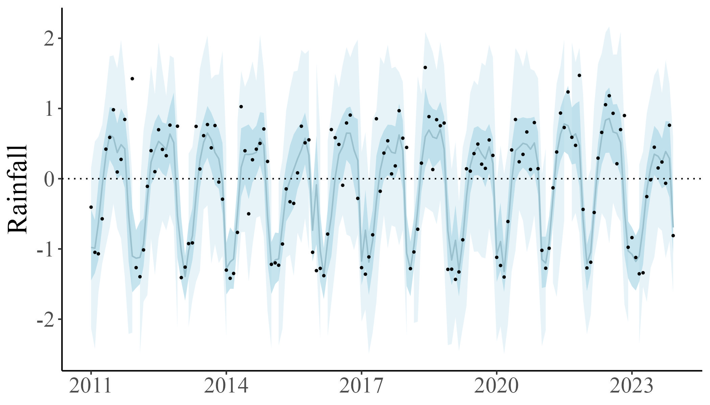
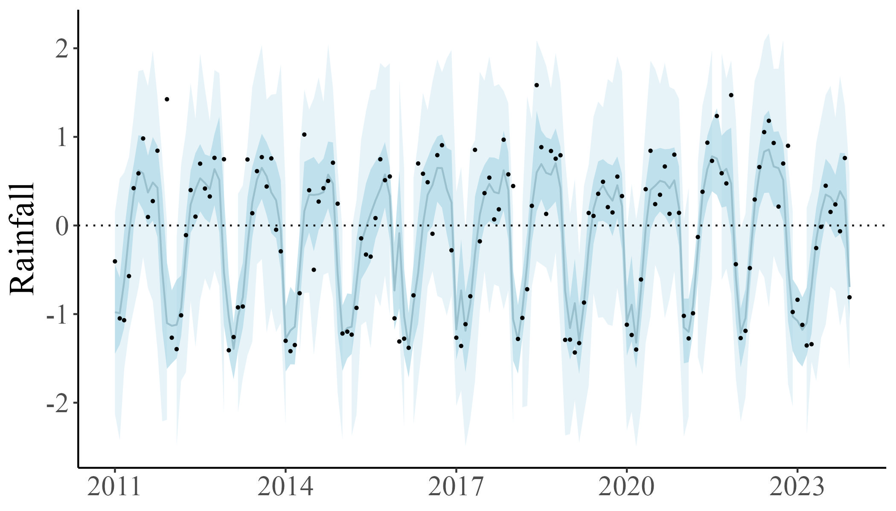

Projects
Current projects
Mechanisms explaining temporal dynamics of seed dispersal networks in island ecosystems (2025-current)
 

Ecological communities are dynamic organizations of organisms whose structure is a function of environmental and biological cycles affecting species composition and abundance. Such ecological regularities affect species interactions due to changes in the availability of suitable interaction partners, which ultimately impacts ecological processes in which the species are involved. We know little about the temporal dynamic of species interactions, and we lack a mechanistic understanding of how climatic regularities interact with the biological responses of the species to explain the structure of ecological networks. In this project, we will address these questions by studying seed dispersal networks in Hawaiian islands.
My work is part of a much larger project studying novel ecosystems, which involves several researchers and institutions (visit the website of the Hawaii VINE Project). But I am more closely working with Dr. Jef Vizentin-Bugoni, Dr. Corey Tarwater and Dr. J. Patrick Kelley.
Related papers publications:
Andrés F. Ramírez-Mejía, Corey E. Tarwater, J. Patrick Kelley, Jinelle H. Sperry, Jeffrey T. Foster, Donald R. Drake, and Jeferson Vizentin-Bugoni. Temporal dynamics of seed-dispersal networks: Disentangling the role of direct biotic and abiotic factors and bottom-up processes. Journal: Journal of Animal Ecology (under review). Role: first author
Vizentin-Bugoni, J., Tarwater, C. E., Foster, J. T., Drake, D. R., Gleditsch, J. M., Hruska, A. M., Patrick Kelley, J., & Sperry, J. H. (2019). Structure, spatial dynamics, and stability of novel seed dispersal mutualistic networks in Hawai’i. In Science (Vol. 364). http://science.sciencemag.org/
Vizentin-Bugoni, J., Sperry, J. H., Kelley, J. P., Foster, J. T., Drake, D. R., Case, S. B., Gleditsch, J. M., Hruska, A. M., Wilcox, R. C., & Tarwater, C. E. (2022). Mechanisms underlying interaction frequencies and robustness in a novel seed dispersal network: Lessons for restoration. Proceedings of the Royal Society B: Biological Sciences, 289(1982). https://doi.org/10.1098/rspb.2022.1490
Biotic and abiotic drivers of the structure of non-trophic interaction networks in tropical forests (2024-current)
{kind=link}
Ecological networks are dynamic systems governed by periodical biotic and abiotic processes. Such factors operate at particular temporal scales and involve synergies that drive community structure and ecosystem functioning. In this research, we studied how the direct and indirect effects of biotic and abiotic factors affected the structure of non-trophic interaction networks in tropical forests. To do so, we used ant-follower birds as a model system: a bird aggregation specialized in following army ants to increase its foraging efficiency.
This research is part of the project Army Ant Followers Project led by Dr. Corey Tarwater and Dr. J. Patrick Kelley. Overall, we use observational and manipulative experiments and advanced modeling techniques to understand the factors responsible for structuring ant-followers groups in Panama’s tropical forest.
You can find a press article about the project here, and a very nice video about the fieldwork here.
This research is part of my work at the Ecological Interactions Lab led by Dr. Jef Vizentin-Bugoni.
Related papers publications:
Ramírez-Mejía A. F., Mary De Aquino, Michael Castaño Díaz, Juliana Hinz Wolter, Henry S. Pollock, J. Patrick Kelley, Jeferson Vizentin-Bugoni & Corey E. Tarwater. Biotic and abiotic factors directly and indirectly impact the structure of non-trophic networks across a rainfall gradient. Journal: Ecology (under review). Role: first author
Laura Gómez-Murillo, Jeferson Vizentin-Bugoni, Ramírez-Mejía A. F., Corey E. Tarwater. Rainfall alters network structure while fragmentation results in the breakdown of a mixed-species group of birds. Journal: Oecologia (under review). Role: coauthor, data analysis
Elizabeth J. Howard, Andrés F. Ramírez-Mejía, Michael Castaño, Mary De Aquino, Henry S. Pollock, Jefferson Vizentin-Bugoni, and Corey E. Tarwater. Testing long standing assumptions about army ant swarms: how profitability and dominance alter space use in birds. Journal: Behavioral Ecology (under review) .Role: coauthor, data analysis
Jordan, Kimberley; Ramírez-Mejía, Andrés F.; Wilcox, Rebecca C.; Brawn, Jeffrey ; Alfonso, Camilo; Tarwater, Corey. Testing the space-for-time assumption and the hygric niche hypothesis using precipitation effects on avian body condition. Journal: Proceedings of the Royal Society B: Biological Sciences (under review). Role: coauthor, data analysis
Low opportunity cost areas in large-scale monoculture for pollinator conservation (2023-current)
{kind=link}
Argentina is one of the leading countries producing citrus, and the Northwestern of the country has the largest cultivated area. Consequently, during the last decades, the agricultural landscape of this region has been severely transformed, being dominated by large-scale monocultures of citrus at the Andean piedmont, followed by non-flowering crops of sugar cane and soybean. Here, we aim to study how non-cultivated areas within citrus farms can boost pollinators’ diversity. Specifically, we want to assess how different facets of pollinator diversity are affected by floral resources (composition and abundance), crop margins, and natural areas. Moreover, we aim to disentangle the mechanisms promoting pollinators pollinators persistence within the crop.
This project is conducted in partnership with the NGO Proyungas and lead by Dr. Natacha Chacoff, Dr. Carolina Monmmany, Dr. Roxana Aragón, and me.
Selected publications (only those were I played a significant role)
- Monasterologo, M, Ramírez-Mejía A. F., et al. (2024). Animal pollination contributes to more than half of Citrus spp. production despite the species and cultivar. Scientific reports, vol 14, Article number: 22309. https://www.nature.com/articles/s41598-024-73591-6.
Past projects
A control system for managing pollination service in blueberries (2023-2024)

Pollination management in pollinator-dependent crops generally depends on beehives stocked at variable densities. Farmers typically seek to saturate crop flowers with pollinators, while giving little consideration to how different stocking densities actually affect flower-visitation rates and optimal pollination levels depending on the mating crop system. Such an approach would be unthinkable in the case of other crop inputs. Still, although pollination is crucial for securing crop yields and profits, its management is generally based on much more ambiguous criteria, leading to uncertainties about its outcome and actual benefits. In this project, I aim to combine different modeling techniques to predict blueberry production based on the strength, density, and spatial arrangement of honeybee hives on the farm, honeybee pollination effectiveness, and optimal levels and patterns of pollen deposition in the crop.
This project was part of a past postdoctoral work under the supervision of Dr. Pedro G. Blendinger and Dr. Natacha Chacoff.
Selected publications (only those were I played a significant role)
- Ramírez-Mejía A. F., Chacoff N., Cavigliasso P., Blendinger P. (2024). How much is enough? Optimizing beehive stocking densities to maximize the production of a pollinator-dependent crop. Ecological modelling, vol 498: https://doi.org/10.1016/j.ecolmodel.2024.110891.
Pollination service and blueberry production in Argentina (2018-2023)

During the last five years, my research has been focused on understanding how spatial patterns interact with farming practices to modulate the provision and contribution of pollination services to blueberry production. Specifically, I studied (and continue studying):
Mechanisms driving the effect of animal pollination on fruit production, fruit quality, and nutritional content.
Optimal pollination thresholds to maximize blueberry production.
Individual and population effectiveness of birds and insects pollinating blueberries.
Cascading processes affecting pollination service, from landscape to farming area.
This work was part of SURPASS2, an international collaboration between institutions of Argentina, Brazil, Chile and the UK, to research crop pollination service, invasive species and land cover mapping in South America.
Selected publications (only those were I played a significant role)
Ramírez-Mejía A F, Chacoff N, Lomáscolo S, Woodcock B, Schmucki R & Blendinger P. (2024). Optimal pollination thresholds to maximize blueberry production. Agriculture Ecosystems and Environment https://doi.org/10.1016/j.agee.2024.108903
Ramírez-Mejía A F, Blendinger P, Woodcock B, Schmucki R, Escobar L, Morton R, Vieli L, Nunes-Silva P, Lomáscolo S, Morales C, Murúa M, Agostini K, & Chacoff N. 2023. Landscape structure and farming management interacts to modulate pollination supply and crop production in blueberries. Journal of Applied Ecology. DOI: https://doi.org/10.1111/1365-2664.14553
Nunes-Silva Patrícia, Ramírez-Mejía A F., Blochtein B, Ramos J, Agostini K, Vieli L, Santanna M, Raguse-Quadros M, Maureen M., Chacoff N P, Cavigliasso P, Blendinger P G., Domingos S. (2023). Blueberry: pollination and production in South America. ISBN: 978-65-00-65347-2. DOI: https://doi.org/10.5281/zenodo.7770381.
Ramírez-Mejía A F, Lomáscolo S & Blendinger P. (2023) Hummingbirds, honeybees, and wild insect pollinators affect yield and berry quality of blueberries depending on cultivar and farm’s spatial context. Agriculture Ecosystems and Environment. DOI: https://doi.org/10.1016/j.agee.2022.108229